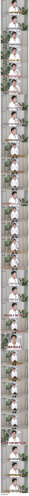

소고기가 혈관 막힘과 관련이 없는 이유
댓글
저탄고지 6개월 하니깐 별다른 운동 안해도 살빠지는건 덤이고 혈액검사할때 엄청 좋아짐 물론 나도 그 고기값 감당 못해서 포기함
난 5년 잘 참았는데 계곡에서 물놀이 3시간 하고 나오니까
회사 동생이 신라면 작은컵을 준비해줬고 천상의 맛을 느낌
그리고 결국......
탄수화물은 태어났을때부터 안먹으면 답이 없음 그걸 몸이 원하는데 어찌할 방도가 없음
뭐든지 양의 문제긴함
양의지 네이놈
포화지방산비율이 높아서 상대적으로 안좋을수있다를 대중들 알아듣기 쉽게 표현한거 아님? 소고기 먹는다고 혈관이 진짜로 막힐거면 벌써 다죽엇겟지....
쌀밥이랑고기먹고 탄산에 비빔면먹으면 되나
별개로 삼겹살 저녁때마다 250g씩 먹었는데 LDL 수치가 정상보다 높아지더라 보건담당자가 삼겹살 자주 드시냐고 물어보던데
탄수화물 즉 당분이 올라가면 인슐린이 나와서 다 지방으로 바꿈 이게 살찌는 원인 아니냐
소고기처럼 포화지방 많은 음식 먹으면 간에서 콜레스테롤 많이 뿜어내는 건 정설이잖아?
존나 상식적으로 생각해도 내가 소고기먹는다고 그 기름이 혈관으로가진 않자너
콜레스테롤이니 뭐니 그 이야기하는지
하지만, 기름 성질로 보면 약간 의미가 있음.
건강에 좋은 불포화지방과 건강에 안좋은 포화지방으로 나뉘는건 잘 알꺼야.
상대적으로 '저온'에서 액체인 기름은 불포화지방산임.
대표적인 예가 생선지방임.
하지만 포화지방산은 실온에서 대체로 고체가 됨.
너 지금 세계 슈퍼푸드에 선정된 돼지 기름을.... 읍
저 양반 저탄고지 대표 의사고 나도 5년정도 했는데 마운자로
맞는것 처럼 살도 잘 빠지고 그 당시 몸도 꽤 건강했음...다만
고기값이 씨발.....암튼 조금 더 나아가면 그냥 소고기가 아니라 Grass fed를
먹는게 더 좋다고 하니 그렇게 알면 됨...